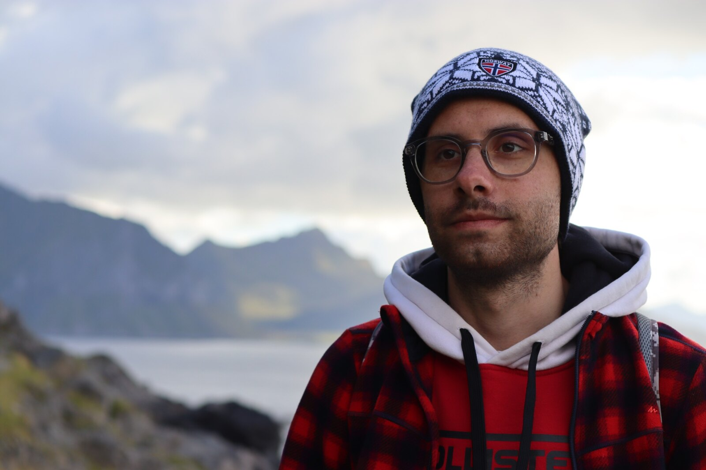

Gabriele
Calzolari.
Doctoral researcher developing safe, learning-enabled autonomy for robots operating in uncertain, communication-constrained environments.
Safe autonomy for public-safety robotics.
Current position
Doctoral Student in Robotics and Artificial Intelligence at Luleå University of Technology, within the Signals and Systems division. WASP PhD student in the Robotics and AI Group.
Beyond research
Outside the lab, I enjoy swimming, hiking, and outdoor activities—time that helps me recharge, explore new places, and return to research with renewed perspective.
Different robots. One coordinated intelligence.
My research investigates how heterogeneous ground and aerial robots can perceive, communicate, and make safe decentralized decisions during exploration, search and rescue, surveillance, and situational-assessment missions.
Featured research.
Reinforcement Learning Driven Multi-Robot Exploration via Explicit Communication and Density-Based Frontier Search
IEEE International Conference on Robotics and Automation (ICRA)
FEATURED · ICRA↗ 2024D-MARL: A Dynamic Communication-Based Action Space Enhancement for Multi Agent Reinforcement Learning Exploration of Large Scale Unknown Environments
IEEE/RSJ International Conference on Intelligent Robots and Systems (IROS)
FEATURED · IROS↗ 2026Safe Heterogeneous Multi-Agent RL with Communication Regularization for Coordinated Target Acquisition
Preprint · Safe heterogeneous UAV–UGV coordination
LATEST RESEARCH↗Further publications.
A Graph-Based Reinforcement Learning Approach with Frontier Potential Based Reward for Safe Cluttered Environment Exploration
European Control Conference (ECC), pp. 485–490
↗ 2026Safe Reinforcement Learning for Exploration and Communication in Multi-Agent Systems
Licentiate Thesis · Luleå University of Technology
↗ 2025A Hierarchical Approach for Autonomous Robotic Exploration with Frontier Search and DRL-based Path Planner
IFAC-PapersOnLine, 14th IFAC Symposium on Robotics
↗ 2024Decentralized Multi-Agent Reinforcement Learning Exploration with Inter-Agent Communication-Based Action Space
24th International Conference on Control, Automation and Systems (ICCAS)
↗Research grounded in real robotic systems.
My work combines simulation, learning-based decision-making, graph representations, constrained communication, and experimental validation toward deployable autonomy for public-safety missions.
Affiliation
Robotics and AI Group
Luleå University of Technology
Luleå, Sweden
Support & projects
Wallenberg AI, Autonomous Systems and Software Program (WASP) and EU Horizon Europe research activities.